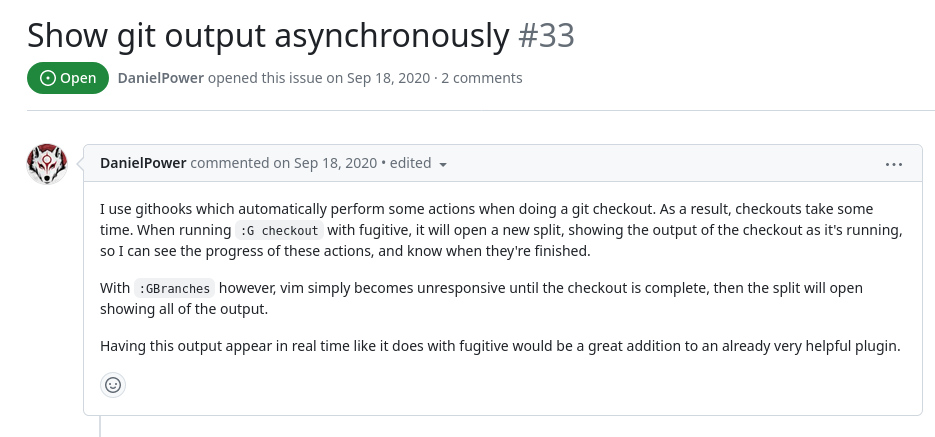

$ WHOAMI
$ ▐
$ mkdir awesome-project
$ cd awesome-project
$ nvim main.py
Codeando hasta que sea perfecto

Pero nunca lo será.
Pero está lo suficientemente cerca para que sea de utilidad a alguien más.
$ git init

-
¿Quién? ¿Qué? ¿Cuándo?
-
Mantener un registro de los cambios en el código.
-
Colaboración con otros usuarios.
-
Dar crédito a los autores cuando incluyas sus cambios.
$ git push
Compartiendo tu código
$ git push
¡Pero espera!
Documentación
¿Qué incluir en la documentación?
-
Descripción del proyecto
-
Instalación
-
Uso y ejemplos
-
Cómo contribuir
Licencia
Reglas y acuerdos que las personas que usan o modifican tu proyecto deben seguir.
¿Qué licencia usar?
LICENSE
- GPL, AGPL, LGPL
- MIT
- Apache
- Creative Commons
¿Qué licencia usar?
LICENSE
$ git push
https://github.com/{your-username}/awesome-project

El primer issue

¡Yay!
¡Alquien está usanto du proyecto!
.. o está intentando usarlo.
El primer pull request
$ git merge feature

Ups, me convertí en un maintainer
-
Responder preguntas
-
Solucionar problemas
-
Tomar decisiones
-
Code review
-
Aceptar pull requests
No estás obligado a hacer nada de esto
-
Responder preguntas
-
Solucionar problemas
-
Tomar decisiones
-
Code review
-
Aceptar pull requests
Archivando un proyecto
¡Tú también puedes hacerlo!
¡Crea, aprende y comparte!